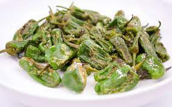

Pimiento del Padron

Description
Most traditional tapas menus prominently feature potatoes, bread, and pork in various forms, which are delicious! However, it gets even better when these staples are complemented by a splash of fresh green produce. Enter the Padrón pepper!
Pimientos de Padrón are small, bright green peppers that come from the municipality of Padrón in Galicia, in the northwest part of Spain. They're usually mild because of their low levels of capsaicin, but occasionally, they can be surprisingly spicy, making the act of eating them even more exciting.
Ingredients
- 1 tbsp olive oil
- Salt
- 500g padron peppers
Steps
- Wash the padrón peppers in a colander.
- Dry them thoroughly. The drier they are, the better they'll brown and blister.
- Heat 1-2 centimeters of olive oil in a heavy skillet, such as cast iron. (This is key to crispy, tasty result!) When the oil is very hot, but not yet smoking, add the peppers and allow them to blister and brown before turning.
- Turn a couple of times until they're soft and browned on all sides. Remove them with a slotted spoon and sprinkle your favorite sea salt on top.
- Eat them whole while they're hot and fresh, leaving only the stems behind.